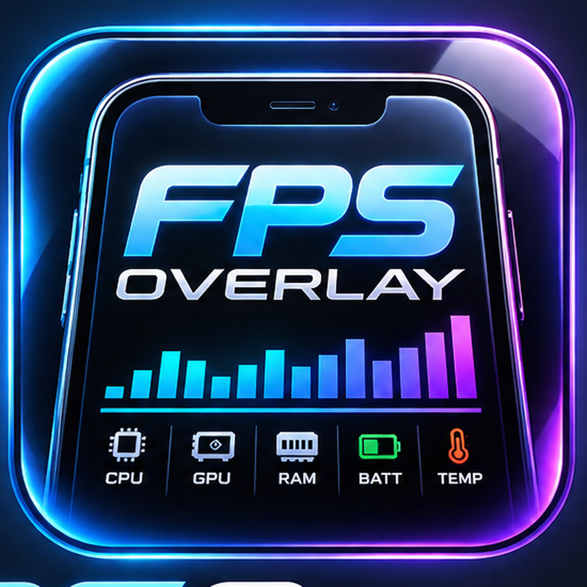

Real-time frame rate
▂▃▅▇█▆▅▇█▇▆▅▇█▆

FPSOverlayA lightweight performance overlay for iOS gaming through LiveContainer. FPS, CPU, GPU, RAM, battery, frame time, Hz and thermal state — visible while you play.
Actual FPSOverlay captures. One frame at a time, full width, automatically moving through the gallery.
Designed around compact, readable telemetry so the game stays the focus.
Real-time frame rate
Processor activity
Graphics information
Memory tracking
Live battery state
See frame pacing instantly.
Device thermal state
Screen refresh rate
Get the latest release from GitHub.
Add FPSOverlay to your LiveContainer setup.
Turn on the overlay and launch a game.
Telemetry appears over your gameplay.